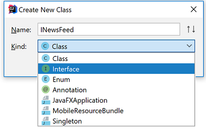
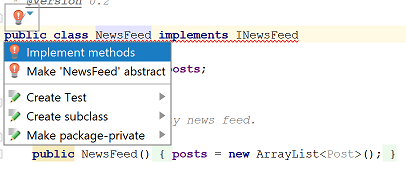
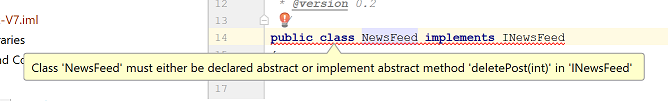

Abstraction · Interfaces · Social Network App · Interfaces and Collections
In this practical, you will use the Collections Framework Interfaces in the Network app.
Create a new project called Network-V6 in IntelliJ.
These are the solution files from Network-V5. Copy them into the project:
In this section, you may need to refer to your lecture slides for support (i.e. the third slide deck).
In Post.java:
define the comments ArrayList to be a List.
create a getter and setter for the comments field.
import java.util.List;
In NewsFeed.java:
define the posts ArrayList to be a List.
import java.util.List;
Run you app and test your code to make sure your refactoring did not break anything.
Save your work.
In this step, you will create the INewsFeed interface and implement it in NewsFeed. In this section, you may need to refer to your lecture slides for support (i.e. the third slide deck).
In IntelliJ, create a new project called Network-V7 and paste the Network-V6 src files into it.
Note: the solution to V6 is in the next step if you need it.
Within the src folder, create a new Interface called INewsFeed.java. If you don't see the option to create an interface, create a new Java Class and when the dialog box appears, choose Interface as the kind from the drop-down box.

Add the following abstract methods into the Interface:
void addPost(Post post);
void deletePost(int index);
String show();Any class implementing this new interface will have to provide concrete implementations fo reach of these abstract methods. This is how we can force a class to adhere to a design we want i.e. code to contract.
Implement the INewsFeed interface in the NewsFeed class i.e.
public class NewsFeed implements INewsFeedYou will notice immediately that IntelliJ starts complaining...we either need to make the Newsfeed class abstract, or provide a concrete implemention for each method listed in the interface:

Previously, our code contained these concrete methods:
So IntelliJ isn't complaining about these. However, there is no concrete implementation for the deletePost method:

We will now provide an implementation for this method (note you can select the implement method option displayed when you hover over the red light bulb - this will create a method stub for you):
@Override
public void deletePost(int index) {
}Add the code to remove the object stored in the posts collection at the specified index. Remember to verify that the index is valid before trying to remove it.
In the implementation of the show method, add the index number of the post to the output string (in the next step, we will ask the user to enter the index number of the post they wish to delete).
Add an option 5 to the menu...Delete a Post
When this option is selected, a new method called deletePost() should be called. This method should:
display all the stored posts
ask the user to enter the index number of the post they wish to delete
delete the post at the specified index
Note: don't worry about robustness in this lab e.g. exception handling on the input, etc. The purpose of this lab is just to introduce you to Interfaces in the simplest form possible.
Test the delete aspect of your code; is all working as expected?